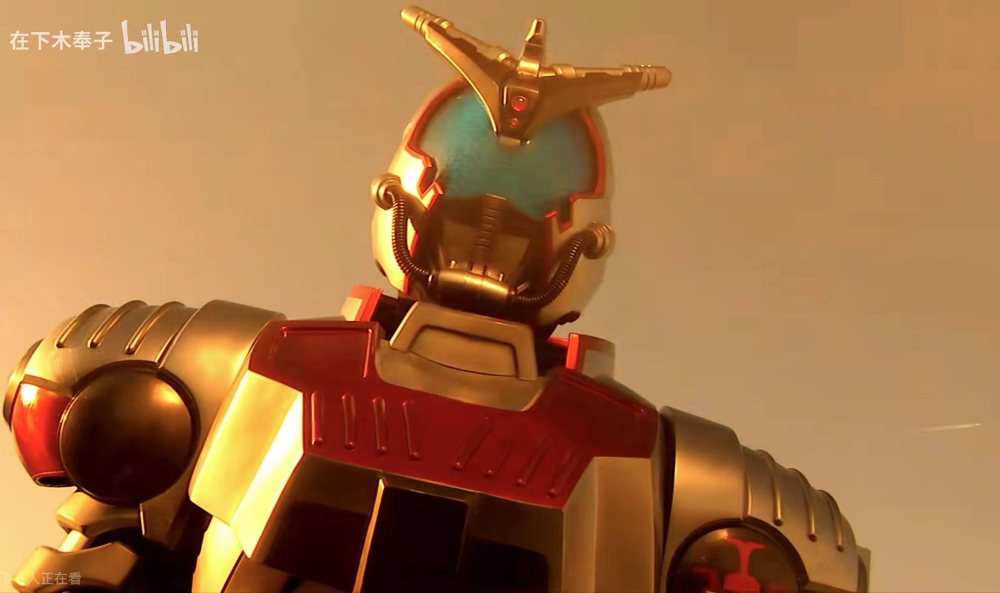
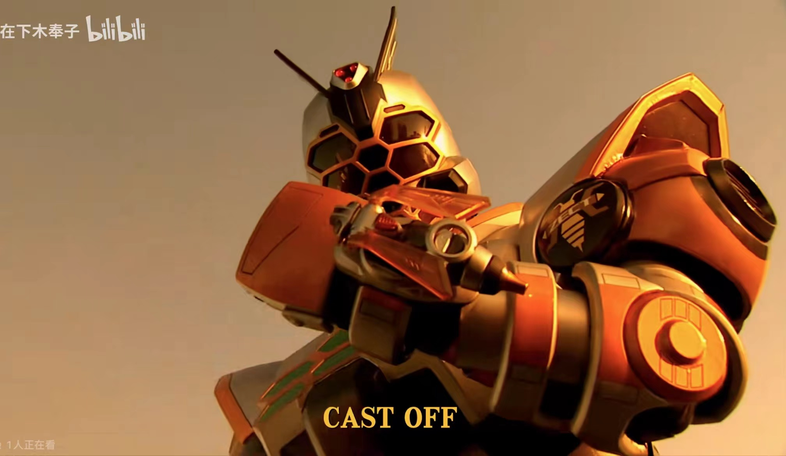
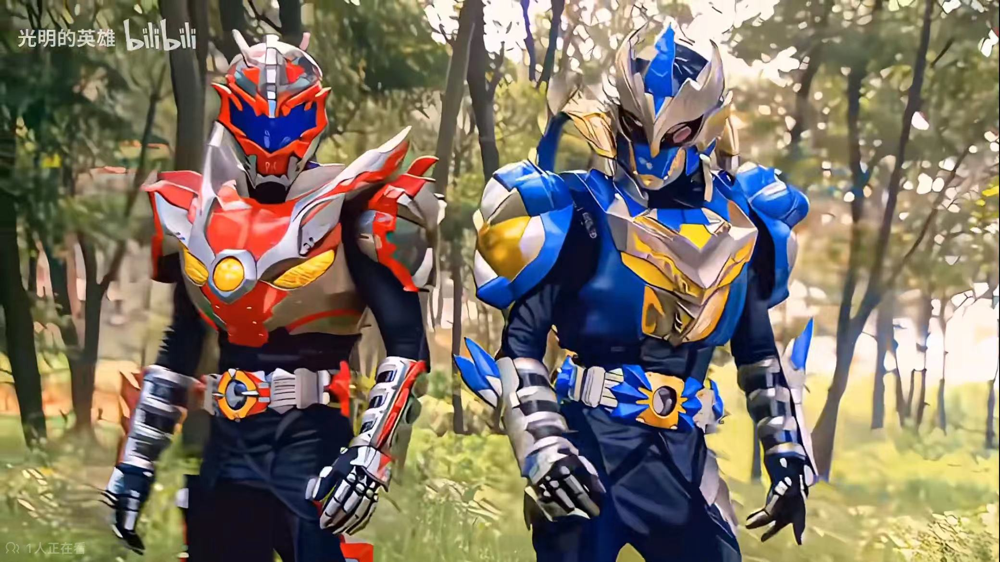
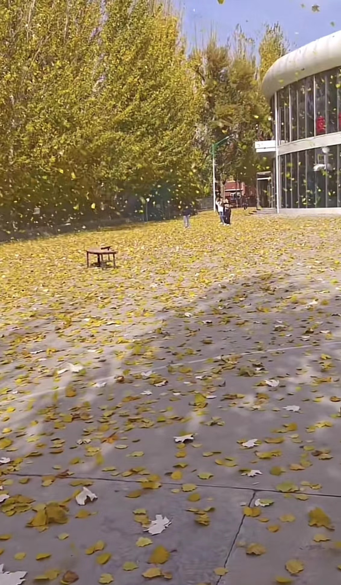

喜欢的电视剧
《masked rider kabuto》
（name：仮面ライダーカブト/Masked Rider Kabuto），
The 7th bullet of the Heisei Knight series and also the 35th anniversary of the birth of Kamen Rider.
As it is a commemorative work, we have once again adopted an insect shaped design,
And like "Kamen Rider 555", it is full of metal mechanics,
The novel combat scenes in it are filmed using techniques similar to that of "The Matrix",
A large amount of CG has increased the sense of speed and appearance. Speed combat has become the selling point of this game,
Knights and monsters can fight at super high speeds!


《铠甲勇士》
Xinnan, Beimiao, Dongshan, Kunzhong, and Xizhao are the descendants of Huocun,
Shuicun, Mucun, Tucun, and Jincun, respectively,
They all have a mysterious gene in their bloodline,
Under the influence of the Light and Shadow Stone,
they will obtain the magical battle armor that has been passed down in China since ancient times and become representatives of the power of light,
including the Flame Dragon Hero, Black Rhinoceros Hero, Wind Eagle Hero, Land Tiger Hero, and Snow Mastiff Hero.
The light and shadow warriors represented by them possess the energy of justice,
Struggle resolutely against the leader of the dark forces, the Black Emperor, and his minions.
The dark forces, in order to disrupt social happiness and stability, have developed powerful beasts using a large amount of pollutants,
Creating environmental pollution and social chaos, the light and shadow warriors, through unity, finally achieved their final victory,
Successfully sealed 55 magic stones and five major magic stones. To celebrate victory, everyone gathered at the Happy Dumpling Restaurant,
Wrap all the happiness in the filled "Happiness Dumplings"

personal information
- Name:Fan
- Email：12345678@qq.com
- Educational background.
personal profile
I am a student from Taihu, Wuxi,
and today I would like to share with you my learning and growing experience.
First of all, I would like to talk about my academic performance.
Ever since I went to college, I have been full of enthusiasm and motivation for learning.
I listen to lectures attentively, participate actively in discussions,
and work hard to learn professional knowledge.
I also actively participate in practical activities,
such as various subject competitions, modelling competitions and volunteer activities.
These experiences not only gave me a deeper understanding of theoretical knowledge,
but also taught me how to apply knowledge in practice.
Apart from academics, I also focus on personal growth and progress.
I actively participate in various clubs and volunteer activities,
such as literary competitions and involvement in educational activities.
Through these activities, I have not only made many like-minded friends,
but also learnt how to communicate with others and teamwork.
At the same time, through these activities,
I have acquired knowledge and skills in various aspects and improved my comprehensive quality.
In the university life, I also encountered many problems and difficulties.
For example, sometimes the pressure of exams is too much,
which makes me feel anxious and confused. However,
I managed to overcome these difficulties by seeking help,
making friends and exercising self-control.
This experience has taught me how to cope with frustration and pressure and made me appreciate my development and progress more.
In conclusion, as a student, I treasure the opportunity to learn and grow.
I believe that as long as I maintain my enthusiasm and vigour in my future study and work, and continue to improve my qualities and abilities,
I will be able to make greater contributions to society. Thank you very much.
daily life
Autumn leaves are like a colourful festival.
Walking on the forest path, the fallen leaves rustle under your feet,
and you will subconsciously immerse yourself in this golden world.
The leaves, once as green as the ocean,
slowly turn yellow and red in the autumn wind, as if wearing a gorgeous dress.
They float down like the sky sprinkled with gold, giving people an unrivalled sense of beauty.
They seem to be dancing gracefully!

This is a spicy dish with tomatoes and beef over rice.
The rice balls were full and covered with tomato and beef broth.
There was a little bit of broth left over to whet the appetite.